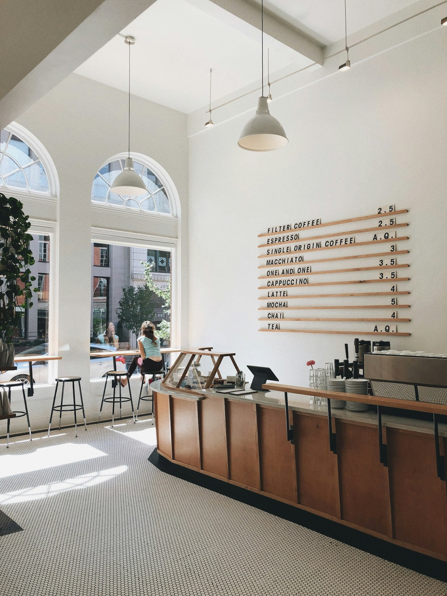
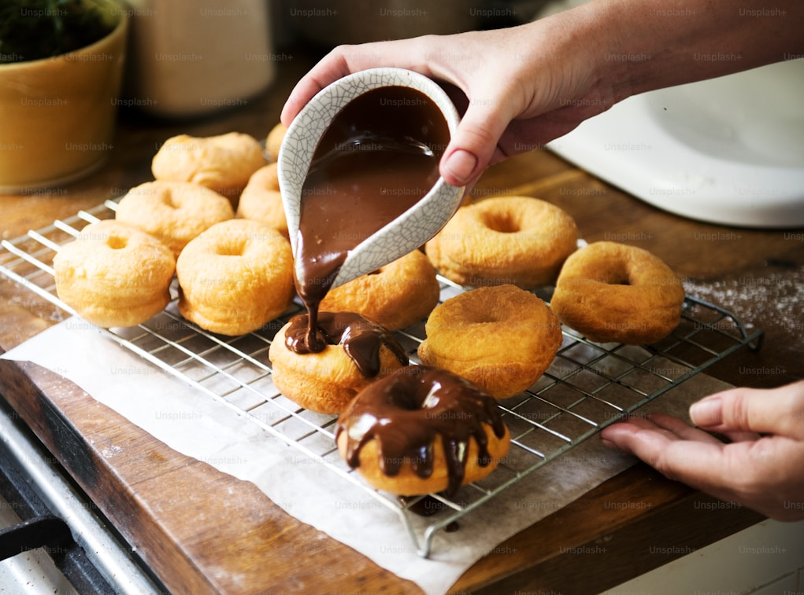
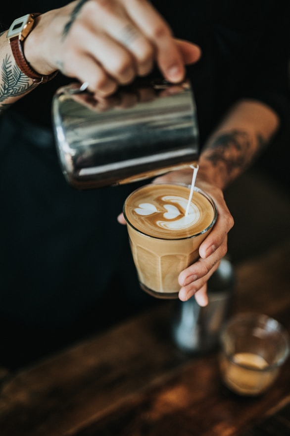

Breads & Banter began with a simple idea — to create a space where thoughtfully crafted
food meets genuine hospitality.
WHO WE ARE
Breads & Banter is a neighborhood gourmet café where thoughtfully crafted food meets genuine hospitality. From freshly baked breads and pastries to comforting café classics, every dish is made with care, patience, and a love for good conversation. It’s a space where mornings begin slowly, afternoons stretch a little longer, and every visit feels like home.
FOUNDER STORY
“It wasn’t just about baking bread. It was about creating the place we
wished existed.”
Sherin always knew she was meant to create something of her own. After nearly five years of exploring different fields — from textiles and biryani cuisine to art — she slowly realized where her true passion lay. It wasn’t in offices or corporate corridors. It was in the craft of making. In chocolate. In bread. Once she discovered it, there was no turning back.
To master her craft, Sherin pursued specialized courses across Malaysia, the UK, and the UAE. Each experience deepened her understanding of pastry, texture, technique, and flavor. Later, after moving to Bangalore, she enrolled for a diploma in pastry and refined her training further at Lavonne.
But Breads & Banter wasn’t born from baking alone.
When we moved to this neighbourhood, we searched for a space where friends and families could gather freely — somewhere warm, relaxed, and welcoming. A place that felt like it belonged to us. We found ourselves traveling across town to find that feeling.
So we decided to build it here.
When Sherin completed her pastry training and began baking breads, pastries, and specialty cakes, the idea became clear: combine craft with community. Bring quality, warmth, and belonging to our own neighbourhood.
That was the beginning of Breads & Banter.

OUR PROMISE
Handmade daily. No shortcuts,
just patience and premium
ingredients.
OUR GUIDING PRINCIPLES
Every sandwich, every burger, every pastry begins with bread baked right here in our café. No shortcuts, just time, flour, and patience.
We created a space where children are free to explore, draw on chalk walls, play board games, and feel welcome — so dining out is joyful, not stressful.
From comic art walls and first-edition posters to art exhibits, baking workshops, and weekly events — our café is built for connection, not just consumption.


Sherin
FOUNDER & HEAD BAKER
Nestled between the old cobblestone library and the morning sun, our flagship location
has been a cornerstone of the Brookefield community for over a decade. It is a space
where the aroma of sourdough meets the rhythm of the city.
Partnering with local farms to
reduce miles and ensure peak
freshness.
A gathering place built to
foster connection and
conversation.
Small batch production
ensures attention to detail in
every bite.
“Crafted with care. Served with warmth.”